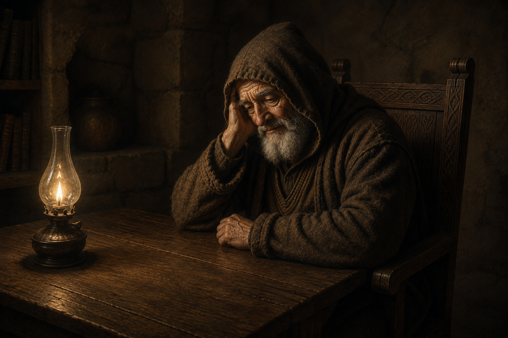

Мир ти и добро, путниче намерниче.
Ја сам хроничар старога Београда, чувар његовог памћења.
Некада записивах све што се у овом граду збило: дане славе и дане страдања, имена знаменитих и дела заборављених.

Али време развеја мој летопис. Његови листови расуше се по граду као јесење лишће, а са њима поче да бледи и сећање.
Судба те је довела овамо. Пронађи изгубљене листове и врати граду његову причу.
Тек када последњи лист буде враћен на своје место, летопис ће поново бити целовит.